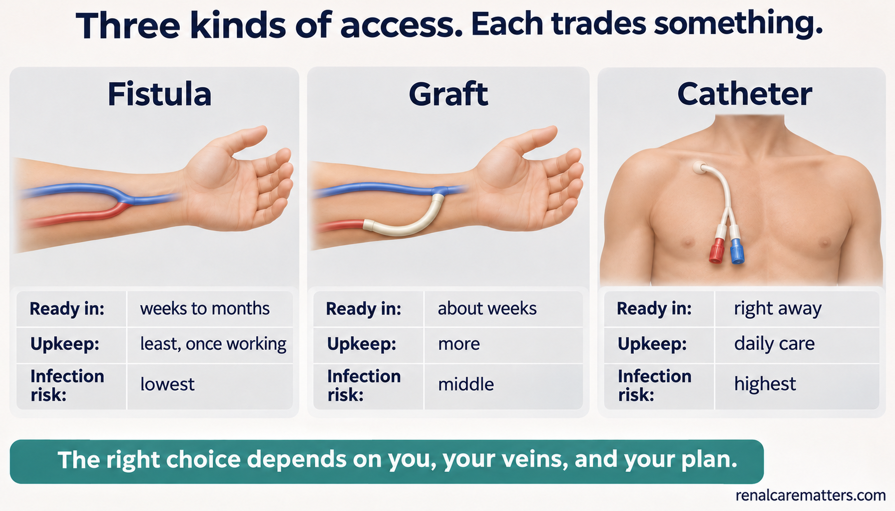
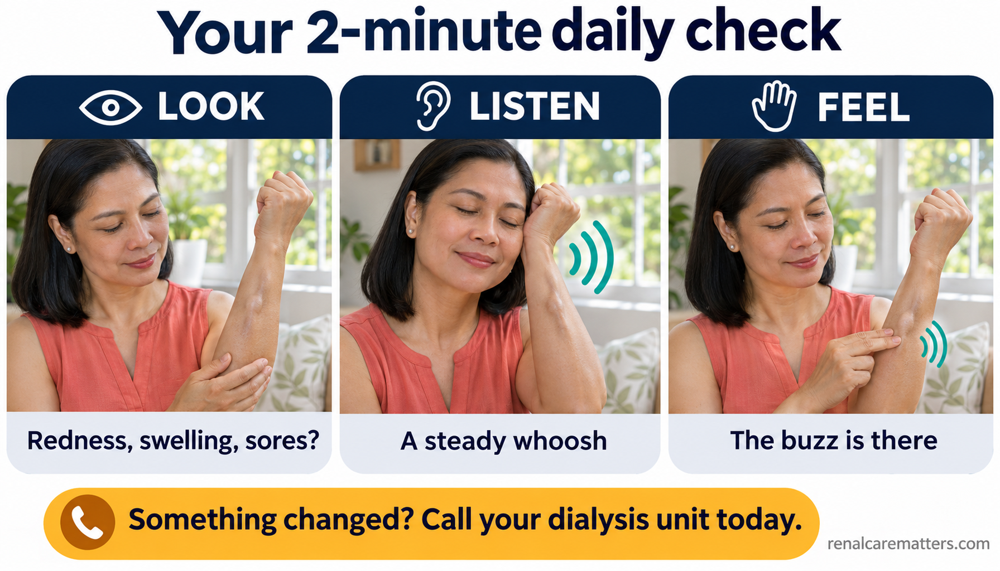
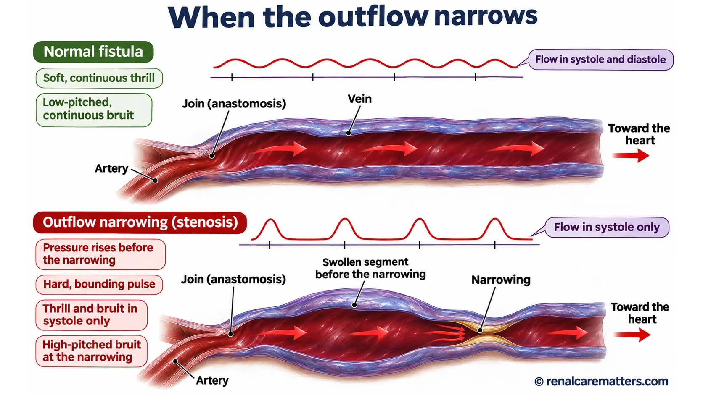
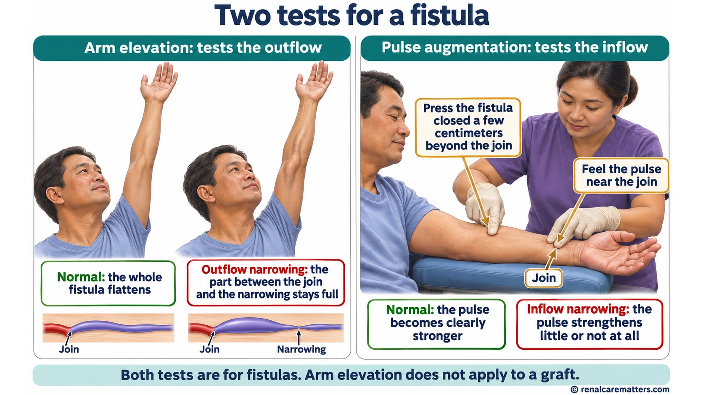
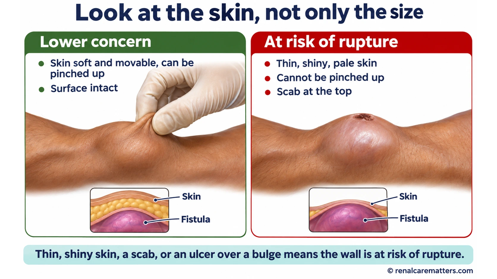
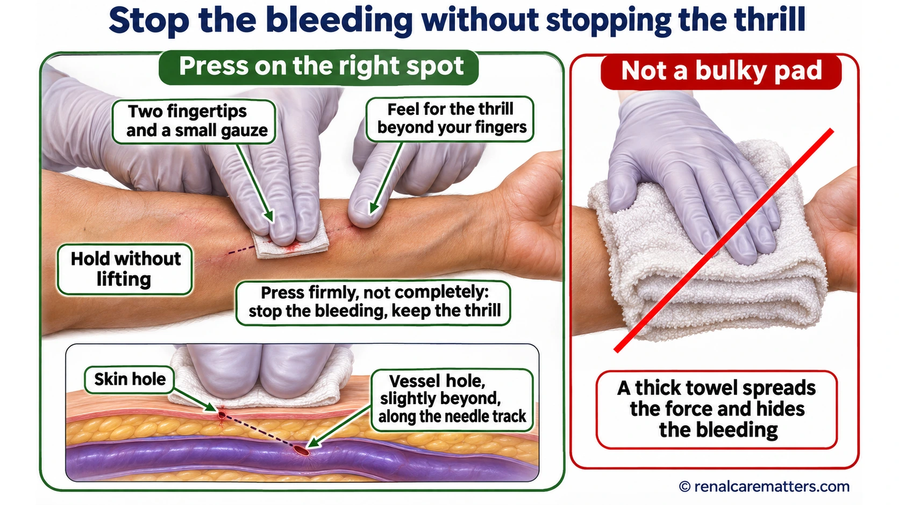

How to examine a fistula or graft, recognize narrowing, clotting, infection, and aneurysm, and control bleeding.
PublishedNailathalaGipatikPepalwal:ReferencesMga SanggunianMga TinubdanReng Reperensya:15Audience: Physicians who cover hemodialysis shifts · attending nephrologists, medical directors, and head nurses who orient themRead timeOras ng pagbasaOras sa pagbasaOras ning pamamasa:
This module is study material for physicians on duty in hemodialysis units. It explains the reasoning behind common decisions; it is not a protocol. At the chairside, follow your unit’s protocol and ask the attending nephrologist for guidance. Doses and cut-off values are set by your unit. Every case is fictional.
Learning objectives
After this module you should be able to
Tell an arteriovenous fistula from an arteriovenous graft at the bedside, and explain why the difference matters.
Perform a look, listen, and feel examination, with the arm elevation and pulse augmentation tests.
Recognize the findings of narrowing, clotting, infection, an aneurysm at risk, and poor blood supply to the hand.
Decide whether an access is safe to needle today, and state what to report.
Control bleeding from a needle site and give the first response to a ruptured access.
State what must never be done to an access arm, and explain the reason for each rule.
Pre-testBefore you read, answer the 8 self-assessment questions and note your score. After the module, select New set of questions and compare. The difference is what you learned; the questions you still miss are what to reread.
Start here
The big picture, in plain words
In plain wordsPicture a plumber who joins a high-pressure water main straight to a soft garden hose. Water now rushes through the hose all day, and a hand resting on it feels a steady hum. If the hose is pinched farther along, the part before the pinch turns hard and thumps with every surge. If the flow stops, the hose goes quiet. A fistula or graft is that hose. Your fingers and your stethoscope can tell you in about a minute whether it is flowing, pinched, or silent.
The picture has limits. An access is living tissue, or a tube surrounded by living tissue. It does not kink. It narrows slowly as its wall thickens from the inside. It can clot, become infected, or thin until it bleeds. Each problem has a bedside sign that you can find before a needle goes in.
Patients call the access their lifeline, because the veins for making a new one are limited.
Figure 1 · Key terms for this module
Vascular accessThe route by which blood leaves the body for dialysis and returns to it.
Arteriovenous fistula (AVF)A surgical join between an artery and the patient’s own vein. The vein enlarges and is used for needling.
Arteriovenous graft (AVG)A tube of synthetic material placed under the skin to connect an artery to a vein. The tube is used for needling.
AnastomosisThe surgical join between two vessels, or between a vessel and a graft.
ThrillA fine vibration felt with the fingers over a flowing access.
BruitThe rushing sound of the same flow, heard with a stethoscope.
StenosisA narrowing inside a vessel or graft.
ThrombosisA clot that blocks the access.
Opening case · fictional
Case: The thrill is gone
Mrs. Lourdes Bautista, 64, has dialyzed twice a week for three years through a fistula in her left upper arm. Her last session was on Friday. It is now Tuesday morning. She tells the nurse, Jun Villanueva, that the “buzz” in her arm stopped on Sunday evening. She did not think it was urgent, because nothing hurt.
Jun feels the arm and finds no thrill. He asks you to confirm before anyone picks up a needle. In the treatment record you read two notes from last week: “venous pressure higher than usual” and “needle sites bled longer than usual after the session.” Mrs. Bautista is 3.4 kilograms above her dry weight. A senior technician offers to “try one needle near the scar and see if blood comes.”
Before reading on, decide:
What do you examine, and what do you expect to find?
Should anyone needle this fistula today?
Whom do you call, what do you say, and what else does Mrs. Bautista need today?
Keep your answers in mind. The lesson gives you what you need, and the case review near the end shows one sound response.
Lesson · part 1
Fistula or graft: two ways to join an artery to a vein
Module 1 noted that a dialysis machine moves about 300 milliliters of blood a minute. An ordinary arm vein cannot supply that. A surgeon therefore joins an artery to a vein, so that arterial blood takes a shortcut into the vein.
In an arteriovenous fistula (AVF), the artery is joined to the patient’s own vein. Over the following weeks to months the vein widens and its wall thickens under the new flow. This process is called maturation. In an arteriovenous graft (AVG), a synthetic tube bridges the artery and the vein, and the needles go into the tube.1

Figure 2. The three kinds of access. This module covers the fistula and the graft. Module 10 covers the catheter.
Feature
Fistula
Graft
What you needle
The patient’s own enlarged vein
A synthetic tube under the skin
How it looks and feels
A soft, compressible vein, often uneven in width
A uniform tube, straight or looped, firmer than a vein
Time before first use
Weeks to months, and some never mature
Usually sooner, as the surgeon advises
Usual site of narrowing
Near the join, or along the vein that drains it
Where the graft meets the vein
Infection
Less common
More common, and seldom cured by antibiotics alone
Arm elevation test
Useful
Not useful, because a graft is a firm tube that does not flatten
Two terms describe the direction of flow. Inflow is the artery and the join. Outflow is the vein that carries blood back toward the heart. In a looped graft the direction is not obvious from the skin, so read the access diagram in the chart.
What the evidence says about the choice
A systematic review pooled 62 cohort studies with 586,337 participants. Compared with patients who used a fistula, patients who used a graft had a higher risk of death (risk ratio 1.18) and of fatal infection (risk ratio 1.36). Patients who used a catheter had the highest risks.2 The authors rated the risk of selection bias as high. Healthier patients are more likely to receive a fistula, so these figures show an association only.
A fistula is also not a guaranteed success. In a meta-analysis of 7,393 fistulas, 23% failed before they could be used, although the studies defined failure in different ways.3 The attending nephrologist and the surgeon decide when a new access is ready for its first needle.
RememberBefore you examine any access, find three facts in the chart: fistula or graft, when it was created, and which way the blood flows.
Lesson · part 2
Look, listen, feel: the one-minute examination
Blood in a working access flows fast, in systole and in diastole, because the vein offers little resistance. Fast flow through the join makes the wall vibrate. Your fingers feel that vibration as a thrill, and your stethoscope hears it as a bruit.

Figure 3. Look, listen, feel. A working fistula or graft has a buzz you can feel (the thrill) and a whoosh you can hear (the bruit).
Looking finds problems of the skin, the wall, and the hand. Listening and feeling test the flow.1
Step
Healthy access
Findings that need a closer look
Look
Even skin, healed needle marks spread along the access, both arms the same size
Redness, swelling, pus, a scab that does not heal, a bulge with thin or shiny skin, a swollen arm, veins visible on the chest or shoulder, a pale or dusky hand
Listen
A low-pitched, continuous rushing sound
A high-pitched or whistling sound, heard only in systole, or no sound
Feel
A continuous thrill, strongest near the arterial join, in a soft and easily compressed access
A hard, bounding pulse in place of a thrill, a thrill felt only in systole, a weak or flat access, warmth or tenderness, or no thrill
Work in the same order every time. Ask about pain, swelling, bleeding at home, a change in the buzz, and a cold or numb hand. Uncover and compare both arms. Then look, feel, and listen from the scar to the shoulder. In a fistula, add the two tests in the next section. Record your decision.
How accurate the examination is
In a prospective study of 142 patients referred for a poorly working fistula, one experienced examiner recorded a diagnosis before angiography. For narrowing of the outflow, the examination had a sensitivity of 92% and a specificity of 86%. For narrowing of the inflow, the figures were 85% and 71%.4
Skill matters. In a second study of 177 patients, the findings of a resident trained in the examination agreed closely with angiography. Those of the referring general nephrologists agreed only moderately.5 Both studies enrolled patients who were already suspected of a problem, so the examination may perform less well in patients without symptoms.
The Kidney Disease Outcomes Quality Initiative (KDOQI) guideline recommends regular examination of every fistula and graft by a trained practitioner. As expert opinion, it adds that everyone who cares for hemodialysis (HD) patients should learn the skill.1
RememberYou cannot recognize an abnormal thrill until you have felt many normal ones. Examine every access you can in your first weeks.
Lesson · part 3
Narrowing and clotting: when the flow changes
The most common threat to an access is stenosis. Scar-like tissue grows from the inner wall and narrows the channel over weeks to months. Blood still enters at arterial pressure, but it cannot leave as easily. Three things follow, and each one can be felt.

Figure 4. Normal flow gives a soft, continuous thrill. A narrowing in the outflow raises the pressure before it: the thrill becomes a hard pulse, and the bruit becomes high-pitched and systolic.
First, pressure rises in the segment before the narrowing. The soft thrill gives way to a hard, bounding pulse, sometimes called a water-hammer pulse. Second, flow through the narrowing stops during diastole, so the thrill and the bruit shorten to systole only. Third, blood speeds up through the tight point, and the bruit there becomes high-pitched.6
Narrowing of the inflow gives the opposite picture. Too little blood enters, so the access feels weak and flat along its length.6
Two bedside tests for a fistula

Figure 5. Two tests for a fistula. Raising the arm tests the outflow. Pressing the fistula closed and feeling the pulse near the join tests the inflow.
Test
What you do
Normal
Abnormal
Arm elevation, for the outflow
Look with the arm down, then raise it above the heart so that gravity drains the vein.
The whole fistula flattens.
Outflow narrowing: the part between the join and the narrowing stays full. Only the part beyond it flattens.
Pulse augmentation, for the inflow
Feel the pulse near the join while the other hand presses the fistula closed a few centimeters farther along.
The pulse becomes clearly stronger.
Inflow narrowing: the pulse strengthens little or not at all.
Both tests work best in fistulas. The arm elevation test does not apply to a graft.6
Clues from the session itself
The dialysis record adds to the examination. KDOQI lists the following as clinical indicators of a significant narrowing.1
On examination, they are a swollen access arm and the changes in pulse, thrill, and bruit described above. During dialysis, they are new difficulty placing needles, clots drawn back through a needle, a blood flow below the prescribed rate, bleeding after needle removal that is longer than usual at three sessions in a row, and an unexplained fall in dialysis adequacy.
Finding these signs is called monitoring. Surveillance uses instruments, such as flow measurement or ultrasound, to look for narrowing before any sign appears. KDOQI does not recommend opening a narrowing that causes no clinical indicators, and it found the evidence too weak to advise routine surveillance of fistulas.1 A recent guideline from the United Kingdom takes a similar view.7 Your hands and the treatment record are the main tools.
Thrombosis
A narrowed access clots when flow becomes slow enough. Low blood pressure, loss of body fluid, and pressure on the arm during sleep are commonly described triggers.8 A clotted access has no thrill and no bruit. A fistula may feel like a firm cord. A pulse may remain near the join, where arterial blood still beats against the clot.6
Time matters. Observational studies discussed in the KDOQI guideline associate earlier treatment with better results.1 Report a clotted access at once. The nephrologist arranges the procedure.
Stop and callCall the attending nephrologist at once when an access has no thrill and no bruit. Do not allow a trial needle. Record when the patient last felt the thrill. The nephrologist decides how the patient will be dialyzed and where the access will be repaired.
Lesson · part 4
Infection, aneurysm, and steal
The flow can be normal while the skin, the wall, or the hand is in trouble. These three problems are found mainly by looking.
Infection
Every needle crosses the skin, and skin carries bacteria. A graft is foreign material, so bacteria that reach it are hard for the body to clear. KDOQI notes that graft infections seldom resolve with antibiotics alone, and that fistula infections are less common.1
Do not allow needling through an infected area. Report the findings to the attending nephrologist, who orders cultures and treatment under your unit’s protocol.
The signs are redness, warmth, swelling, or tenderness over the access, pus or fluid from a needle site, broken skin, or a visible graft. Fever is sometimes the only sign.
Aneurysm
An aneurysm is a bulge of the fistula wall. A pseudoaneurysm is a contained leak through a hole in the wall, held in by the surrounding tissue. It is the usual form in a graft.7 Needling the same small area again and again weakens the wall and the skin over it. This is called area puncture. In a study of 7,058 patients in nine countries, area puncture was associated with a higher risk of access failure than moving the needle sites in an orderly way along the access, called rope-ladder needling.9 The study was observational.

Figure 6. Look at the skin, not only the size. Thin, shiny skin, a scab, or an ulcer over a bulge means the wall is at risk of rupture.
Many aneurysms are stable for years. The danger is the skin. When it thins, little remains to hold back arterial pressure.
Check
Lower concern
At risk of rupture
Size over time
Unchanged
Growing
Skin over the bulge
Soft, movable, can be pinched up
Thin, shiny, pale, cannot be pinched up
Surface
Intact
Ulcer or scab
Arm raised
The bulge softens and flattens
The bulge stays tense
Bleeding after needle removal
Usual for the patient
Often prolonged
This table follows the KDOQI guideline, whose advice on recognizing and needling aneurysms is expert opinion.1 An expert review agreed that treatment of aneurysms rests on experience and not on trials.10 KDOQI advises against needling an aneurysm when another site is available. When none is, the needle goes into the side or base of the bulge and not into its top.1
Stop and callHold needling and call the attending nephrologist the same day for a scab, an ulcer, or thin shiny skin over an aneurysm, or for a bulge that is growing. Tell the patient not to pick the scab and to keep the arm protected. KDOQI advises emergency surgical assessment for erosion or bleeding.
Steal: a hand short of blood
The access is a low-resistance shortcut. Blood that would have supplied the hand can take the shortcut instead. Healthy arteries compensate by widening. Diseased arteries cannot, and the pressure reaching the hand falls.11 KDOQI lists older age, female sex, diabetes, and peripheral artery disease as predictors.1
The patient reports a cold, numb, or painful hand. You may find pale or dusky fingers, a weak grip, or sores at the fingertips. Always compare with the other hand. Severity ranges from mild numbness to gangrene.1
Stop and callCall the attending nephrologist the same day for a hand that is cold, painful at rest, weak, or ulcerated. KDOQI advises urgent referral to a surgeon who is experienced in access problems. Severe pain or weakness soon after access surgery is an emergency.
Lesson · part 5
Safe to needle today: the decision and the arm rules
You do not place the needles. You decide, with the nurse, whether needling is safe, and you make the call when it is not.
What you find
What it suggests
Needle today?
Whom to call
No thrill and no bruit, even if a pulse remains near the join
Thrombosis
No
Attending nephrologist, at once
Bleeding that pressure does not stop
Rupture or a large hole in the wall
No
Emergency response and the nephrologist, at once
Scab, ulcer, or thin shiny skin over a bulge
Aneurysm at risk of rupture
Hold
Attending nephrologist, same day, before the patient leaves
Redness, pus, exposed graft, or fever with a tender access
Infection
Not through the area. Hold and ask
Attending nephrologist, same day
Cold, painful, weak, or ulcerated hand
Steal
Hold and ask
Attending nephrologist, same day
Hard pulse, systolic-only thrill, high-pitched bruit, swollen arm
Stenosis
Ask first if the finding is new. If it is known and a thrill is present, needle as the access plan states, away from the narrowing
Attending nephrologist, before needling if new, otherwise during the shift
New access not yet cleared for use
Still maturing
No
Follow the written access plan. Attending nephrologist if the plan is missing or unclear
Rules for the access arm
Each rule protects the flow, the wall, or the skin. Most rest on custom and expert opinion. They cost nothing, and the harm they prevent is the loss of an access.
Figure 7 · Never on an access arm
No blood pressure cuffCuff pressure stops the flow, and stopped flow can clot.
No blood draws or intravenous linesEach puncture outside the planned needle sites injures the wall and can bring infection.
No tight bandage, watch, sleeve, or bag strapSteady pressure around the arm slows the flow.
No needle through infected, scabbed, or thin skinThe skin may not seal when the needle comes out.
No wrap that encircles the arm after a sessionPressure belongs on the needle site only.
The other arm also needs care, because it may hold the next access. KDOQI considers it reasonable to protect the arm veins and arteries of every patient who is on dialysis or may need it, and to avoid unnecessary punctures and long catheters placed through arm veins.1
Lesson · part 6
Bleeding from a needle site or a ruptured access
A working access carries several hundred milliliters to more than a liter of blood each minute.8 A needle hole normally seals under fingertip pressure. A larger hole can empty the circulation within minutes.
Fatal bleeding is rare. A review from Australia and New Zealand estimated fewer than one death for every 1,000 patient-years on dialysis, and the authors judged these deaths potentially preventable.12 In a review of 88 fatal access bleeds in the United States, 78% of the deaths with a known location happened at home or in a nursing home.13 A patient safety alert in England described 11 life-threatening bleeds over three years, seven of them fatal, and noted that in some patients warning signs had not been recognized.14 All three reports are retrospective.
Two lessons follow. Many ruptures give warning, so examine the skin. Most happen away from the unit, so the patient and family must know what to do.
Bleeding from a needle site

Figure 8. Press with two fingertips and a small gauze, over the skin hole and the vessel hole. Stop the bleeding without stopping the thrill. Do not use a bulky pad.
Figure 9 · A needle site that keeps bleeding
Press on the right spotUse two gloved fingertips and a small folded gauze. The hole in the vessel lies slightly beyond the hole in the skin, along the needle track. Cover both.
Press firmly, not completelyStop the bleeding without stopping the thrill. Feel for the thrill beyond your fingers.
Hold without liftingKeep steady pressure for the time in your unit’s protocol. Lifting the gauze pulls the clot away.
Avoid bulky padsA thick towel spreads the force and hides the bleeding.
Check and recordConfirm that the bleeding has stopped and that the thrill is present before any dressing goes on.
Then ask why it happened. Common causes are the blood thinner given during the session, high pressure from an outflow narrowing, and fragile skin over an aneurysm. Longer bleeding at several sessions in a row is a clinical indicator of stenosis.1 Report it to the attending nephrologist. The blood thinner is part of the prescription.
A ruptured access
Rupture is a tear in the wall, usually through eroded skin over an aneurysm or an infected graft. Your only aim is to stop the bleeding. Saving the access is not a goal at this moment.15
Figure 10 · First response to a ruptured access
Press directly on the bleeding pointUse gloved fingers and a small gauze, and press hard, even if the thrill stops. Do not pile on towels.
Shout for help while you pressCall the unit’s emergency response. Send someone to telephone the attending nephrologist.
If the patient is on the machineHave the nurse stop the blood pump and clamp the lines at once. Do not return the blood now.
Lay the patient flat and raise the armGive oxygen and ask for an intravenous line in the other arm, as your unit’s protocol allows.
Do not let goKeep the pressure on through the transfer. If direct pressure fails, use the further steps in your unit’s protocol.
TransferThe patient needs a surgeon, even if the bleeding stops.
Guidance written for patients in the United Kingdom adds an improvised tool for a bleed that direct pressure does not stop. A plastic bottle cap is placed over the bleeding point with its hollow side against the skin and is held down firmly, and bandaged in place if possible, to seal the area.15 This is expert opinion written for patients at home, based on 2018 recommendations from two British professional societies. It has not been tested in a trial, and it does not replace direct pressure or the call for help. Ask whether your unit teaches it.
Stop and callBleeding that is not controlled by direct pressure is an emergency. Activate the emergency response, keep pressing, and have the attending nephrologist called at once. Do not release the pressure to look, to dress the wound, or to move the patient.
Figure 11 · Call card: bleeding from a fistula or graft
RecognizeBleeding that spurts, soaks the gauze, or returns when pressure is eased.
First 2 minutesGloves. Firm fingertip pressure on the bleeding point. Call for help. Patient flat, arm raised.
Stop dialysis?Yes, at once, for a rupture, for a needle that has come out, or for any bleeding that pressure does not control. Have the nurse stop the blood pump and clamp the lines.
Return the blood?Not during the emergency. Never delay pressure to save the blood in the circuit. Do NOT return blood while the access still bleeds, through a needle that has come out or moved, into a swollen needle site, or from a circuit that holds air or clots or has stood still longer than your unit’s protocol allows. Never put back a needle that has come out. The nurse returns blood only when the bleeding is controlled, the return needle is secure and away from the bleeding point, and the attending nephrologist agrees. If in doubt, do not return it.
CallEmergency response and the attending nephrologist at once. Transfer for surgical assessment after any rupture.
WriteTime, site, estimated blood loss including blood left in the circuit, the thrill afterward, vital signs, and who was called.
On the floor
Real situations: problems and solutions
These are fictional but typical. For each one, cover the answer, decide what you would do, then compare. Where a step depends on local rules, your unit’s procedure and your supervisor’s direction come first.
The cuff on the wrong arm
What you see
A dialysis patient is admitted to a ward for pneumonia. When she arrives for her session, an automatic blood pressure cuff is cycling on her fistula arm, and an intravenous line sits in the back of the same hand.
What is likely going on
The ward team did not know which arm holds the access, or did not know the rule. Repeated cuff inflation stops the flow each time, and stopped flow can clot.
What to do
Remove the cuff. Examine the fistula for a thrill and a bruit at once, and report what you find to the attending nephrologist. Ask the ward to move the line to the other arm and to post a sign at the bedside. Telephone the ward physician and explain the reason.
Why it matters
A fistula can be lost during an admission for an unrelated illness. A two-minute call protects it for the rest of the stay.
The scab the patient keeps covering
What you see
A man with a ten-year-old upper-arm fistula has two large bulges. He wears a sleeve over them. When the nurse lifts the sleeve, one bulge has shiny skin and a dark scab, and he mentions that it oozed on his pillow two nights ago.
What is likely going on
The skin over the aneurysm has eroded. Bleeding at home is a warning that the wall may give way.
What to do
Hold needling. Tell him not to pick the scab. Call the attending nephrologist before he leaves the unit, because he needs surgical assessment arranged now. Show him and his family how to press on the spot and whom to call.
Why it matters
Most fatal access bleeds in published reviews happened at home, and warning signs were often present beforehand.
A cold hand after a new fistula
What you see
A woman with diabetes had an upper-arm fistula created three weeks ago. It is not yet in use. She says the hand on that side is cold and tingles, and at night it hurts. The fingers are paler than on the other side, and her grip is weaker.
What is likely going on
Steal. The new fistula is diverting blood, and her diseased arteries cannot make up the difference. Pain at rest and weakness are signs of a serious shortage.
What to do
Examine and compare both hands, and record color, warmth, sensation, and grip. Call the attending nephrologist the same day for urgent surgical referral. Do not reassure her that it will settle.
Why it matters
Delay can leave permanent weakness or lead to loss of fingers. A patient with a working fistula and a damaged hand has not been well served.
A red, tender graft and a low fever
What you see
A man with a forearm graft has a temperature slightly above normal and feels tired. Over one segment of the graft the skin is red, warm, and tender. The thrill is normal.
What is likely going on
Graft infection until proved otherwise. A normal thrill says nothing about infection.
What to do
Do not allow needling through the red area. Check his vital signs and look for signs of sepsis. Call the attending nephrologist, who will order cultures and treatment under the unit’s protocol and decide how he will be dialyzed today.
Why it matters
Infection of a graft seldom clears with antibiotics alone, and it can erode the graft wall and cause bleeding.
The needle site that oozes every session
What you see
For the third session in a row, a woman’s needle sites take much longer than usual to stop bleeding. The nurse reports that the venous pressure has also crept up. On examination the thrill near the upper needle site feels like a hard pulse.
What is likely going on
An outflow narrowing is raising the pressure inside the fistula. The blood thinner is a possible contributor, and it is not the whole explanation.
What to do
Control the bleeding with correct fingertip pressure. Do the arm elevation test. Report the findings and the three-session pattern to the attending nephrologist during the shift, so that imaging can be arranged. Do not alter the blood thinner yourself.
Why it matters
These are the warning signs that come before a clot. Acting on them can save the access and spare the patient a catheter.
Field notes
Feel every access you can during your first month. Normal has a wide range, and your fingers need the practice.
Read the last three treatment records before you examine. A rising venous pressure or longer bleeding tells you where to feel.
Ask the patient. Many know their own thrill well and notice a change days before the staff do.
Teach every patient two things: feel for the thrill each morning, and telephone the unit the same day if it is gone.
Know where the gloves and gauze are at every station, and know your unit’s steps for bleeding that pressure does not stop.
Case review
Back to the case: The thrill is gone
What do you examine, and what do you expect to find? Look, listen, and feel along the whole fistula, and compare the two arms and hands. In Mrs. Bautista you would expect no thrill and no bruit. The vein may feel firm, like a cord, and a pulse may remain near the join. These findings mean thrombosis. Last week’s notes explain it. A higher venous pressure and longer bleeding after needle removal are warning signs of an outflow narrowing. The fistula gave warning twice before it clotted.
Should anyone needle it today? No. A needle placed in a clotted fistula yields no flow. It injures the wall, and it may make the repair harder. A “trial needle” adds harm and no information, because the examination has already answered the question.
Whom do you call, and what else does she need? Call the attending nephrologist now, because a clotted access is best cleared promptly. Report the access type and age, the time she last felt the thrill, your findings, and last week’s two notes. She also still needs dialysis. She is four days from her last session and 3.4 kilograms above her dry weight, so assess her as Module 2 described. The nephrologist decides how she will be dialyzed today and where the fistula will be repaired.
Last week’s notes should have led to a call that day. Mrs. Bautista should also have known to telephone the unit as soon as the thrill was gone.
Skills lab · with your preceptor
Skills checklist: Full access examination
Examine the fistula or graft of five patients before needling while your preceptor observes. Include at least one graft. Your preceptor rates each step as satisfactory, needs practice, or not observed. Steps marked Critical must all be satisfactory before sign-off. This checklist supports supervised learning; your unit’s own procedure and competency form are the authority. A printable version of every checklist is on the trainer page.
CriticalReads the chart for the access type, date of creation, direction of flow, and notes from the last three sessions.
Asks about pain, swelling, bleeding at home, a change in the thrill, and coldness or numbness of the hand.
CriticalCleans hands, exposes both arms to the shoulder, and compares arm size and the two hands.
CriticalInspects the whole access for redness, discharge, scabs, bulges, and thin or shiny skin.
CriticalPalpates from the arterial join along the whole access and states whether a thrill is present and continuous.
CriticalDistinguishes a thrill from a pulse and states where each is felt.
Listens along the access and describes the pitch and timing of the bruit.
Performs the arm elevation test on a fistula and states the result.
Performs the pulse augmentation test on a fistula and states the result.
Checks the hand for color, warmth, sensation, and grip, compared with the other side.
CriticalStates a decision: safe to needle, or hold and call, with the findings that support it.
CriticalShows where and how to press on a bleeding needle site, and checks the thrill afterward.
Records the findings and states what would be reported to the attending nephrologist.
Placement activity. During your first two weeks, examine one access before every shift with a senior nurse, and ask the nurse to show you one access with a known narrowing so that you can feel the difference.
Self-assessment
Check your understanding
Each visit draws 8 questions at random from this module’s 15-question bank. Choose the single best answer for each, then select Check answers; an explanation appears under the best answer. Select New set of questions for a different mix. A good target is 7 of 8 on two different sets. Nothing you select is sent anywhere; scoring happens in your browser.
Lok, C. E., Huber, T. S., Lee, T., Shenoy, S., Yevzlin, A. S., Abreo, K., Allon, M., Asif, A., Astor, B. C., Glickman, M. H., Graham, J., Moist, L. M., Rajan, D. K., Roberts, C., Vachharajani, T. J., & Valentini, R. P. (2020). KDOQI clinical practice guideline for vascular access: 2019 update. American Journal of Kidney Diseases, 75(4, Suppl. 2), S1–S164. https://doi.org/10.1053/j.ajkd.2019.12.001
Ravani, P., Palmer, S. C., Oliver, M. J., Quinn, R. R., MacRae, J. M., Tai, D. J., Pannu, N. I., Thomas, C., Hemmelgarn, B. R., Craig, J. C., Manns, B., Tonelli, M., Strippoli, G. F. M., & James, M. T. (2013). Associations between hemodialysis access type and clinical outcomes: A systematic review. Journal of the American Society of Nephrology, 24(3), 465–473. https://doi.org/10.1681/ASN.2012070643
Al-Jaishi, A. A., Oliver, M. J., Thomas, S. M., Lok, C. E., Zhang, J. C., Garg, A. X., Kosa, S. D., Quinn, R. R., & Moist, L. M. (2014). Patency rates of the arteriovenous fistula for hemodialysis: A systematic review and meta-analysis. American Journal of Kidney Diseases, 63(3), 464–478. https://doi.org/10.1053/j.ajkd.2013.08.023
Asif, A., Leon, C., Orozco-Vargas, L. C., Krishnamurthy, G., Choi, K. L., Mercado, C., Merrill, D., Thomas, I., Salman, L., Artikov, S., & Bourgoignie, J. J. (2007). Accuracy of physical examination in the detection of arteriovenous fistula stenosis. Clinical Journal of the American Society of Nephrology, 2(6), 1191–1194. https://doi.org/10.2215/CJN.02400607
Coentrão, L., Faria, B., & Pestana, M. (2012). Physical examination of dysfunctional arteriovenous fistulae by non-interventionalists: A skill worth teaching. Nephrology Dialysis Transplantation, 27(5), 1993–1996. https://doi.org/10.1093/ndt/gfr532
Salman, L., & Beathard, G. (2013). Interventional nephrology: Physical examination as a tool for surveillance for the hemodialysis arteriovenous access. Clinical Journal of the American Society of Nephrology, 8(7), 1220–1227. https://doi.org/10.2215/CJN.00740113
Aitken, E., Anijeet, H., Ashby, D., Barrow, W., Calder, F., Dowds, B., Fielding, C., Gilbert, J., Jones, R., Karunanithy, N., Khawaja, Z., Roberts, E., Robson, M., Shroff, R., Stacey, H., Thomson, P., & Waters, D. (2025). UK Kidney Association clinical practice guideline on vascular access for haemodialysis. BMC Nephrology, 26(1), 461. https://doi.org/10.1186/s12882-025-04374-y
Daugirdas, J. T., Blake, P. G., & Ing, T. S. (Eds.). (2015). Handbook of dialysis (5th ed.). Wolters Kluwer.
Parisotto, M. T., Schoder, V. U., Miriunis, C., Grassmann, A. H., Scatizzi, L. P., Kaufmann, P., Stopper, A., & Marcelli, D. (2014). Cannulation technique influences arteriovenous fistula and graft survival. Kidney International, 86(4), 790–797. https://doi.org/10.1038/ki.2014.96
Inston, N., Mistry, H., Gilbert, J., Kingsmore, D., Raza, Z., Tozzi, M., Azizzadeh, A., Jones, R., Deane, C., Wilkins, J., Davidson, I., Ross, J., Gibbs, P., Huang, D., & Valenti, D. (2017). Aneurysms in vascular access: State of the art and future developments. The Journal of Vascular Access, 18(6), 464–472. https://doi.org/10.5301/jva.5000828
Scheltinga, M. R., & Bruijninckx, C. M. A. (2012). Haemodialysis access-induced distal ischaemia (HAIDI) is caused by loco-regional hypotension but not by steal. European Journal of Vascular and Endovascular Surgery, 43(2), 218–223. https://doi.org/10.1016/j.ejvs.2011.10.018
Jose, M. D., Marshall, M. R., Read, G., Lioufas, N., Ling, J., Snelling, P., & Polkinghorne, K. R. (2017). Fatal dialysis vascular access hemorrhage. American Journal of Kidney Diseases, 70(4), 570–575. https://doi.org/10.1053/j.ajkd.2017.05.014
Ellingson, K. D., Palekar, R. S., Lucero, C. A., Kurkjian, K. M., Chai, S. J., Schlossberg, D. S., Vincenti, D. M., Fink, J. C., Davies-Cole, J. O., Magri, J. M., Arduino, M. J., & Patel, P. R. (2012). Vascular access hemorrhages contribute to deaths among hemodialysis patients. Kidney International, 82(6), 686–692. https://doi.org/10.1038/ki.2012.185
Educational study material for physicians. Does not replace the attending nephrologist’s orders, the unit’s protocols, required certification courses, or supervised practice.